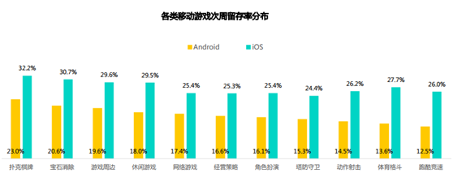
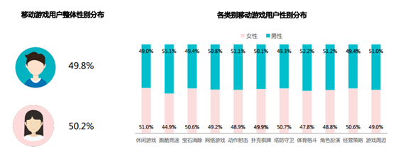
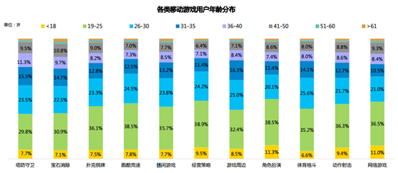
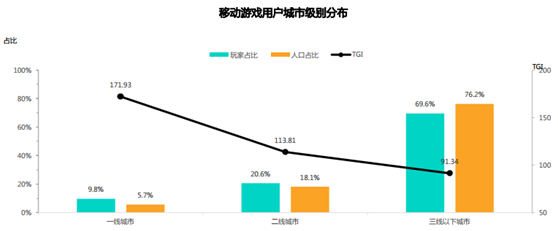
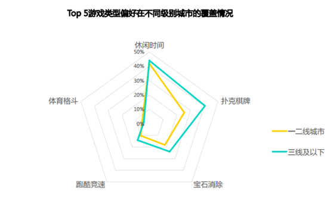
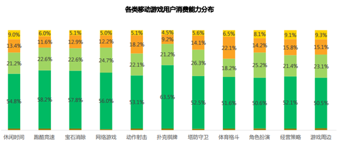
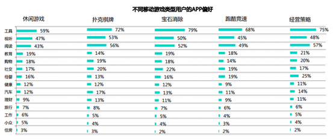

据纹桃了解到的消息，近日国内第三方全域大数据服务提供商发布了《2017年国内移动游戏用户研究》。在报告中指出：“移动游戏用户的地域集中度较高，低线城市成为移动游戏的兵家必争之地，扑克棋牌类游戏占领低线城市休闲娱乐场景。”

报告指出：无论iOS端还是Android端，扑克棋牌类游戏的次周留存率均最高，分别达到23%和32.2%，iOS端次周留存整体高于Android端，这与iOS设备整体质量较高有关。

而从用户分布情况来看，棋牌游戏的用户性别分布情况是最平均的，男性用户为50.1%，女性用户为49.9%。

如果按用户年龄段来划分的话，可以看到30岁以下的年轻用户是棋牌游戏的核心玩家，占比达66.9%。这个数据对棋牌运营商在投放互联网广告来说，是非常重要的。毕竟目前市面主流的互联网广告都支持用户年龄选项，这个数据可以帮助运营商覆盖更精准的目标用户。

随着4G网络和智能手机的普及，三线以下城市的移动游戏用户占比大幅提高，但是玩家集中度并未饱和(TGI<100)。而随着国产低价智能手机在低线城市的不断扩张，4G网络的普及，可以推测移动游戏未来在三线及以下的城市未来发展空间巨大。2017年地方棋牌已经率先分了一杯羹了。

报告指出，棋牌游戏在低线城市的覆盖率明显高于一二线城市。在中小城镇地区，棋牌游戏本就是百姓重要的休闲娱乐甚至是社交方式，移动互联 网时代，扑克棋牌类APP帮助用户突破了时间与空间的桎梏，将阵地从街头巷尾的棋牌室转移到线上。此外，我国幅员辽阔，各地的棋牌 规则各异，地方棋牌APP的兴起有效地满足了不同地域用户的需求，迅速占领当地的休闲娱乐场景。在三线及以下城市，棋牌类游戏的覆盖率超过40%，远远高于一二线城市水平。

不过从用户消费水平来看，棋牌游戏的玩家数据并不算出彩，消费能力偏低的用户占比达63.5%，高于其他游戏类型。这样的数据结果其实也在预料之中，一是棋牌游戏用户中有很大一部分为休闲玩家，玩棋牌游戏以打发时间为主；另一方面，地方棋牌APP中的“房卡”消费一般都转移到微信中去了，统计工具很难完整统计得到。

另外，棋牌游戏玩家对视听APP、阅读APP的偏好度均较高。这对运营商们的网络推广是一个很重要的指标，运营商们不妨有针对性的尝试在视听APP和阅读APP中投放棋牌广告。纹桃科技致力于棋牌游戏开发14年，拥有大量棋牌游戏开发运营经验和大批成功案例。
想开发一款迅速盈利的棋牌游戏，欢迎咨询热线电话：18711739336


游戏产品
PRODUCTS

售后服务
SERVICE

技术支持
TECHNOLOGY

运营指导
OPERATING